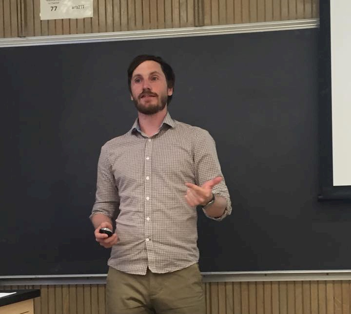

Dr. Christopher Duffy
Senior Lecturer
School of Mathematics and Statistics
University of Melbourne, Australia
firstname.lastname@unimelb.edu.au
Research
My research interests lie primarily in algorithmic and computational aspects of graph theory, particularly for problems defined on directed, signed and mixed graphs. This includes applications in areas as wide ranging as quantum physics and social sciences. Within this framework I study homomorphisms and colourings, discrete-time processes and graph-searching models. In each of these areas I utilize tools from discrete mathematics, combinatorics and theoretical computer science to study computational questions such as asymptotic behaviours of evolving discrete systems, parameter bounds, and computational complexity. My research yields fundamental theorems and analyses that lay the groundwork for future applications of multi-layer graph models in the social and physical sciences.
Peer-Reviewed Contributions
25. Duffy C, MacGillivray G, Tremblay B (2025) Switching m-edge-coloured graphs using non-abelian groups Australasian Journal of Combinatorics 91(1) 20-31
24. Duffy C, Mullen M (2024) An analogue for quasi-transitivity for edge-coloured graphs Discussiones Mathematicae Graph Theory 44 1189-1215
23. Beaton I, Cox D, Duffy C, Zolkavich N (2023) Chromatic polynomials of 2-edge coloured graphs Electronic Journal of Combinatorics 30(4)
22. Bellitto T, Duffy C , MacGillivray G (2023) Homomorphically Full Oriented Graphs Discrete Mathematics and Theoretical Computer Science25(2)
21. Duffy C, Jacques F, Montassier M, Pinlou A (2023) The chromatic number of 2-edge-colored and signed graphs of bounded maximum degree Discrete Mathematics 346(10)
20. Duffy C, Pavan P.D, R.B Sandeep, Sen S. (2023) On Deeply Critial Oriented Cliques. Journal of Graph Theory 104(1) 150-159
19. Duffy C and Shan S (2021). On the existence and non-existence of improper homomorphisms of oriented and 2-edge-coloured graphs to reflexive targets. Discrete Mathematics and Theoretical Computer Science 23(1)
18. Duffy C (2020). Colourings of Oriented Connected Cubic Graphs. Discrete Mathematics 343(10)
17. Clarke NE, Cox D, Duffy C, Dyer D, Fitzpatrick S, Messinger ME (2020). Limited Visibility Cops and Robbers Discrete Applied Mathematics 282(15) 53-64
16. Cox D, Duffy C (2019). The Oriented Chromatic Polynomial Electronic Journal of Combinatorics.
26(3): P3.55
15. Duffy C, Janssen J. (2019).Constructing Infinite n-ordered Graphs Lecture Notes in Computer Science 11631: The 16th International Workshop for Algorithms and Models for the Web Graph, (44-56)
14. Duffy C, MacGillivray G. (2019). Firefighter: Saving Sets of
Vertices on Cubic Graphs. Networks. 74(1):62-69
13. Duffy C, MacGillivray G, Sopena E (2019). Oriented Colourings of Bounded Degree Graphs. Discrete Mathematics. 342(4):959-97
12. Duffy C, MacGillivray G, Ochem P, Raspaud A. (2019). Oriented Incidence Colourings of Digraphs. Discussiones
Mathematicae Graph Theory. 39(1): 191-210
11. Bard S, Bellitto T, Duffy C, MacGillivray G, Yang F. (2018). Complexity of Locally Injective Homomorphism to Tournaments. Discrete Mathematics and Theoretical Computer Science. 20(2): #4
10. Duffy C, MacGillivray G, Sopena E. (2018). A Study of k-dipath Colourings of Oriented Graphs. Discrete Mathematics and Theoretical Computer Science. 20(1): #6
9. Duffy C, Lidbetter TF, Messinger ME, Nowakowski R. (2018). A Variation on Chip-Firing: the diffusion game. Discrete Mathematics and Theoretical Computer Science. 20(1): #4
8. Duffy C, Janssen J. (2018) Infinite n-ordered Graphs and Independent Distinguishing Sets. 10 International Colloquium on Graph Theory and Combinatorics, Lyon, France (#57)
7. Duffy C, Janssen J. (2017). The Spread of Cooperative Strategies on Grids with Random Asynchronous Updating. Internet Mathematics. 1(1)
6. Bard S, Duffy C, Edwards M, MacGillivray G, Yang F. (2017). Eternal Domination in Split Graphs. Journal of Combinatorial Computing and Combinatorial Mathematics. 101: 121-130.
5. Bensmail J, Duffy C, Sen S. (2017). An Analogue of Clique for (m,n)-mixed Colored Graphs. Graphs and Combinatorics. 33(4): 735-750.
4. Duffy C, MacGillivray G, Sopena E. (2016). A Study of k-dipath Colourings of Digraphs. Bordeaux Graph Workshop 2016, Bordeaux, France (124-128)
3. Duffy C, Janssen J. (2016).The Spread of Cooperative Strategies on Grids with Random Asynchronous Updating Lecture Notes in Computer Science 10088:
The 13th International Workshop for Algorithms and Models for the Web Graph, (152-163)
2. Duffy C, MacGillivray G. (2015). An Analysis of the Weighted Firefighter Problem. Journal of Combinatorial Computing and Combinatorial Mathematics. 94:67-175.
1. Duffy C, MacGillivray G, Raspaud A. (2014). Oriented Incidence Colouring of Digraphs. Bordeaux Graph Workshop 2014, Bordeaux, France (14-18)
Preprints
1. Beaton I, Cox D, Duffy C, Zolkavich N (2022). Chromatic
Polynomials of 2-edge-coloured Graphs (preprint)
2. Duffy C, Mullen T (2022). An Analogue of Quasi-Transitivity for 2-edge-coloured Graphs (preprint)
3. Belitto T, Duffy C, MacGillivray G (2022). Homomorphically Full Oriented Graphs (preprint)
Education
Much of my teaching experience in the classroom is with students
who are in my class due to course and program requirements, rather
than out of interest in the material. I take particular joy in
helping these students transition from reluctant learners to ones
who can find joy in understanding the why of what they are
doing, rather than being solely focussed on the how. Helping
these students see their learning as more than a set of procedures
and rules to be followed drives me to design learning experiences
that engage students in meaningful conversation around how to
approach relevant problems from their discipline.
University of Melbourne
-Introduction to Real Analysis (MAST20026) 2021-2023
- Calculus I (MAST10005) 2022,2023
University of Saskatchewan
-Linear Algebra II (MATH266) 2017, 2021
Lecture Notes
0. Things to Remember
1. Introduction to Vector Spaces
2. Subspaces, Span and Linear Independence
3. Linear Independence, Basis and Dimension
4. Linear Maps Part I
5. Linear Maps Part II
6. Linear Maps Part III
7. Polynomials with Complex Coefficients
8. Eigenvalues and Eigenvectors of Linear Operators
9. Inner Product Spaces Part I
10. Inner Product Spaces Part II
11. Change of Basis
-Introduction to Mathematical Reasoning (MATH163) 2019, 2020
Lecture Notes
1. Sets and Functions Part I
2. Sets and Functions Part II
3. Relations Part I
4. Relations Part II
5. Introduction to Formal Logic
6. Mathematical Induction Part I
7. Mathematical Induction Part II
8. Introduction to Graph Theory
9. Complex Numbers
10. Set Cardinality Part I
11. Set Cardinality Part II
12. An Introduction to Number Theory
-Number Theory (MATH364) 2018, 2020
Lecture Notes
1. Divisibility Part I
2. Divisibility Part II
3. Prime Numbers
4. Congruences Part I
5. Congruences Part II
6. Congruences Part III
7. An Introduction to Public Key Cryptography
8. Primitive Roots Part I
9. Primitive Roots Part II
10. Quadratic Residues Modulo p
-Topics in Combinatorics (MATH420) 2020
-Abstract Algebra (MATH363), 2020
-Applications of Graph Theory (MATH327), 2018, 2020
-Applications of Combinatorics (MATH328), 2019
Supervision
Postdoctoral
T. Mullen, Analogues to Quasi-Transitivity for Edge-Coloured
Graphs (2020-21)
Postgraduate
D. Primaskun in progress
Undergraduate
E. Mills Colourings of oriented abelian Cayley graphs (2024), Vacation Scholar, University
of Melbourne
A. Wakefield Arc Reverse Criticality in Oriented Graphs (2023), Vacation Scholar, University
of Melbourne
S. Shan Computational
Complexity of Inferring Context-Free L-Systems (2020-21)
Undergraduate Honours Thesis, University of Saskatchewan co-supervised
with Dr. I. McQuillan
J. Pas Computational Complexity of Restricted Graph
Problems (2019-20), Undergraduate Honours Thesis, University
of Saskatchewan
J. Goertzen Implementing Algorithms for (m,n)-mixed
graph Colouring and Homomorphism (2020) Undergraduate
Student Research
S. Shan Bootstrap Processes in Digraphs (2019-2020)
Undergraduate Student Research, University of Saskatchewan
J. Mitchell Algorithms for Detecting Universal Adjacency
Properties in Mixed Graphs (2019) Undergraduate Student
Research, University of Saskatchewan
N. Zolkavich Chromatic Polynomials of Directed Graphs (2019)
Undergraduate Student Research, University of Saskatchewan
T. Black Continuous and Discrete Mathematical Modeling of
Metal Additive Manufacturing Processes (2019) NSERC USRA co-supervised
with Dr. A. Cheviakov
J. Pas The Simple Chromatic
Polynomial (2018), Undergraduate Student Research,
University of Saskatchewan
R. Cutcliffe The Prisoners Dilemma on
Graphs (2016) Undergraduate Honours Thesis, Dalhousie
University, co-supervised with Dr. J. Janssen
J. Barrett The Power Index
Game (2016-17) Undergraduate Honours Thesis, Dalhousie
University, co-supervised with Dr. R. Nowakowski
J. Barrett The Power Index Game (2016) NSERC USRA,
Dalhousie University, co-supervised with Dr. R. Nowakowski
Past Appointments
2019 - 2021 Associate Member, Department of Computer
Science, University of Saskatchewan, Canada
2017 - 2021 Assistant Professor, Department of Mathematics
and Statistics, University of Saskatchewan, Canada
2017 Adjunct
Scholar, Faculty of Graduate Studies, Dalhousie
University, Canada
2015 - 2017, AARMS Postdoctoral
Fellow , Department of Mathematics and Statistics,
Dalhousie University, Canada
2015 - 2017, Outreach
Coordinator, Atlantic Association for Research in the
Mathematical Sciences, Canada
2011 - 2015, Sessional Instructor,
Department of Mathematics and Statistics, University of Victoria,
Canada